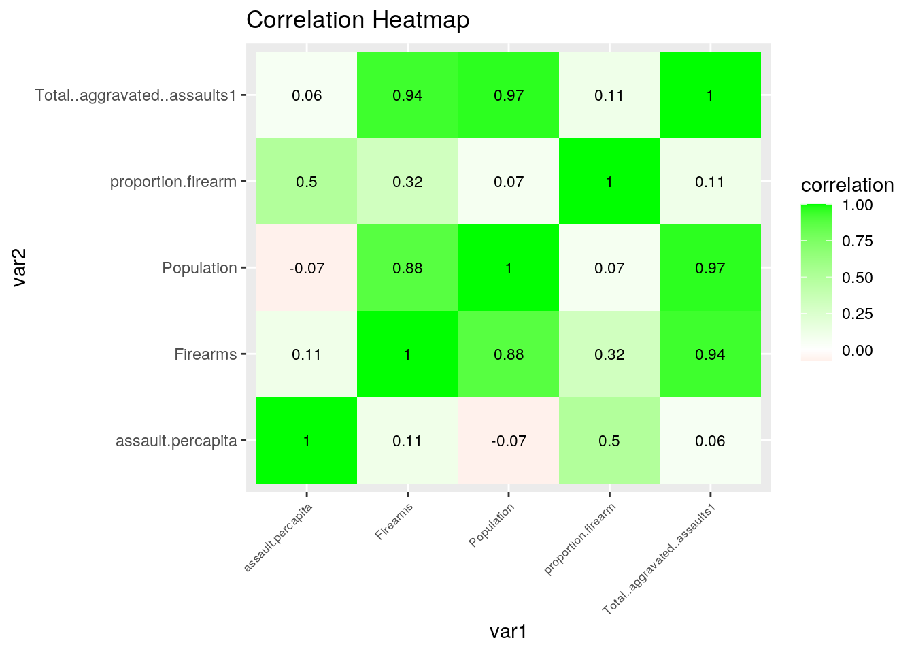
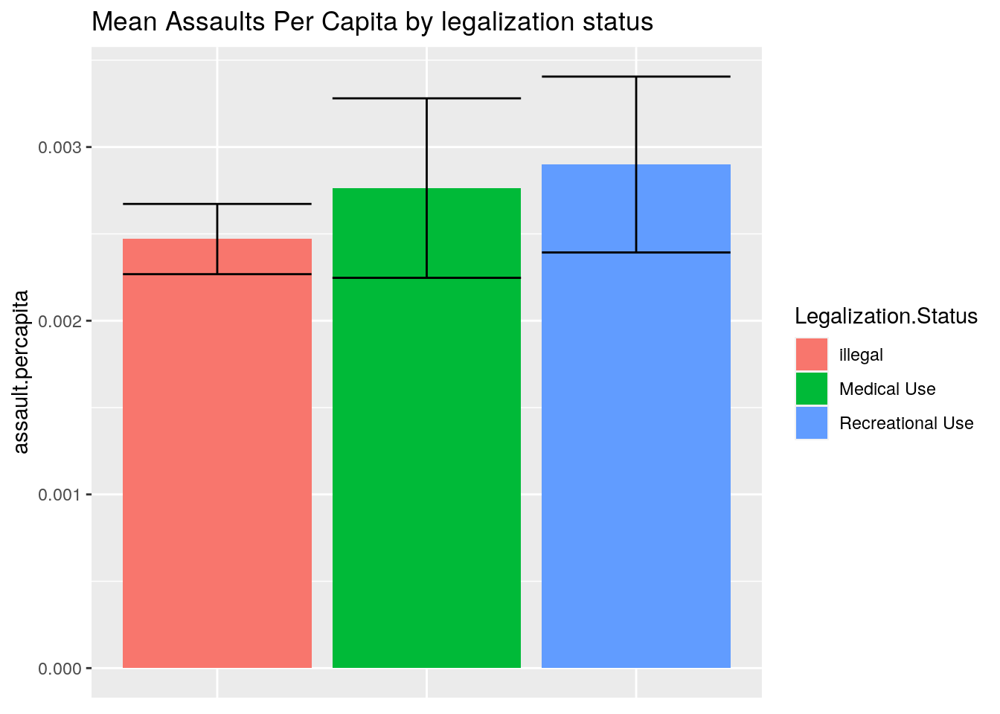
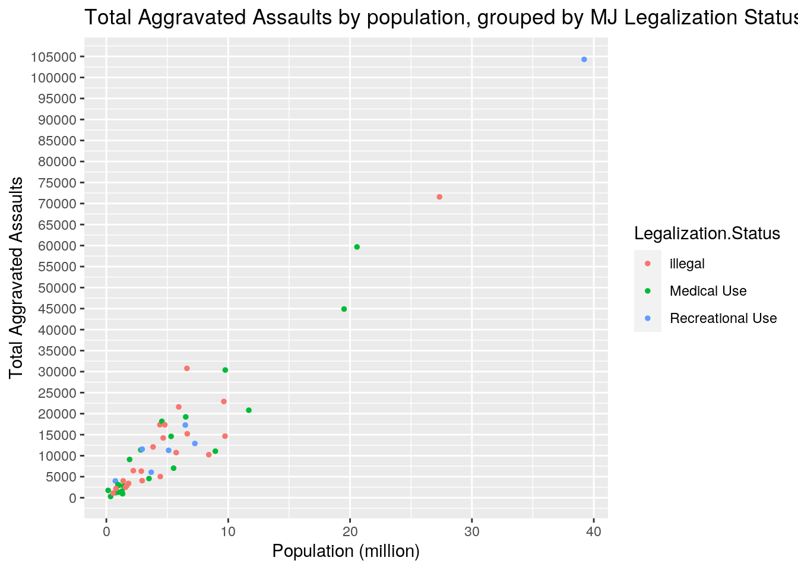
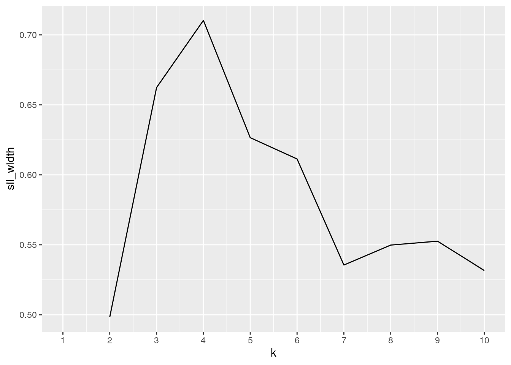
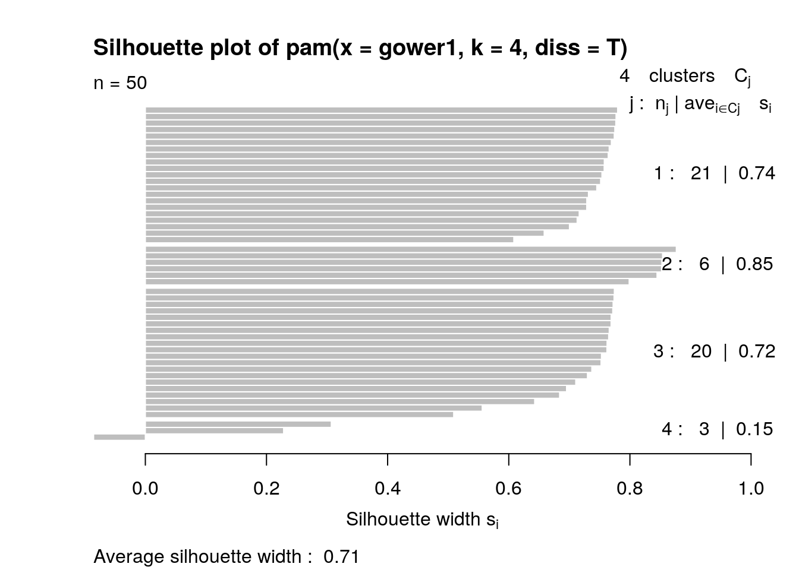
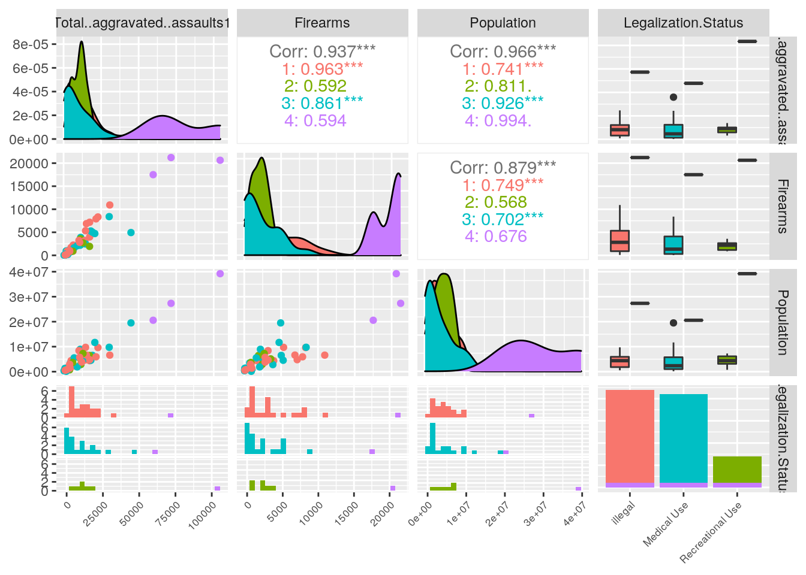

A knitted R Markdown document (ideally HTML) and the raw R Markdown file (as .Rmd) should both be submitted to Canvas by 11:59pm on the due date. These two documents will be graded jointly, so they must be consistent (i.e., don’t change the R Markdown file without also updating the knitted document).
The text of the document should provide a narrative structure around your code/output. All results presented must have corresponding code. Any answers/results/plots etc. given without the corresponding R code that generated the result will not be considered. Furthermore, all code contained in your final project document must work correctly (knit early, knit often)! Please do not include any extraneous code or code which produces error messages. (Code that produces warnings is acceptable, as long as you understand what the warnings mean!)
Find two (!) datasets with one variable in common (e.g., dates, times, states, counties, countries, sports players), both with at least 50 observations (i.e., rows) in each. Please think very carefully about whether it makes sense to combine your datasets! If you find one dataset with 50 patients and it has their age, and you find another dataset with 50 different patients that has their ages, it makes no sense to join them based on age (you would just be pairing up random people of the same age).
When combined, the resulting/final dataset must have at least 4 different variables (at least 3 numeric) in addition to the common variable (i.e., five variables total).
You can have as many variables as you would like! If you found two datasets that you like but they don’t have enough variables, find a third dataset with the same common variable and join all three.
For this project, I will be using two open datasets that I found from Data.World. The first dataset is a subset from a larger dataset titled “Crime in US 2016 Offenses”, a dataset that provides information on the quantity and types of crime in the United States in 2016, categorized by State. The specific subset that I chose for this report lists the population of each state, the total number of aggravated assaults by state, and the number of aggravated assaults performed with a specific weapon (firearms, knife, etc.). The second dataset that I chose for this report contains information on the marijuana legalization status of every state, which places each state in one of three categories: illegal, legalized for recreational use, legalized for medical use.
In this project, I will be merging the two datasets through “States”, and I am interested in observing (if any) correlation between legalization status and the number of aggravated assaults in a year while controlling for population.
pivot_wider()/spread() and then tidy them again with pivot_longer/gather() to demonstrate your use of the functions. It’s fine to wait until you have your descriptives to use these functions (e.g., you might want to pivot_wider() to rearrange the data to make your descriptive statistics easier to look at); it’s fine long as you use them at least once!# The datasets are already tidy, so in this code I am
# converting the rows into columns (pivot-wider), and then
# converting these columns back to rows (pivot_longer) to
# demonstrate use of the tidying functions. I also removed
# NAs after pivoting longer, as each state was repeated
# multiple times when attempting to format.
library(tidyverse)
mjlaws <- read.csv("~/Lab 7/state_marijuana_laws_10_2016.csv")
assault <- read.csv("~/Lab 7/assault1.csv")
assault <- assault[-c(51, 52), ]
assault1 <- assault %>% pivot_wider(names_from = State, values_from = Firearms)
assault1 <- assault1 %>% pivot_longer(c("Alabama":"Wyoming"),
names_to = "States", values_to = "Firearms")
assault1 <- assault1 %>% na.omit()
mjlaw1 <- mjlaws %>% pivot_wider(names_from = State, values_from = Legalization.Status)
mjlaw1 <- mjlaw1 %>% pivot_longer(c("Connecticut":"Washington"),
names_to = "States", values_to = "Legalization.Status")
mjlaw1 <- mjlaw1 %>% na.omit()fulldat <- full_join(assault, mjlaws, by = "State")
fulldat1 <- fulldat %>% select(-c("Knives.or..cutting..instruments",
"Other..weapons", "Personal..weapons", "Agency..count"))
fulldat <- fulldat1I performed a full_join to merge both datasets by State to organize the data better. In the “Mjlaw” dataset, there was 1 observation, not including each state. In the “assault” dataset, there were 7 observations, not including each state. I also decided to remove 4 observations from the merged dataset as seen above, as I did not find them important nor interesting.
# Converting numbers in data to numerical values and removing
# comma (the numbers were classified as character values).
replaceCommas <- function(x) {
x <- as.numeric(gsub("\\,", "", x))
}
fulldat$Total..aggravated..assaults1 <- replaceCommas(fulldat$Total..aggravated..assaults1)
fulldat$Firearms <- replaceCommas(fulldat$Firearms)
fulldat$Population <- replaceCommas(fulldat$Population)library(dplyr)
# Arrange
fulldat %>% arrange(Total..aggravated..assaults1)## State Total..aggravated..assaults1 Firearms Population
## 1 Vermont 302 39 348314
## 2 Maine 948 74 1331479
## 3 Wyoming 1087 90 556446
## 4 North Dakota 1207 60 753138
## 5 Rhode Island 1312 268 983740
## 6 New Hampshire 1546 302 1275170
## 7 Illinois 1745 955 147363
## 8 South Dakota 2176 235 791627
## 9 Mississippi 2469 902 1565661
## 10 Hawaii 2769 180 1428557
## 11 Idaho 2866 613 1680830
## 12 Montana 2948 477 1036405
## 13 Delaware 3120 1054 950787
## 14 Nebraska 3409 763 1820419
## 15 Alaska 3992 883 738566
## 16 West Virginia 4004 1025 1380643
## 17 Utah 4057 849 2937596
## 18 Connecticut 4558 746 3500401
## 19 Kentucky 5035 1714 4424357
## 20 Oregon 6061 904 3681279
## Legalization.Status
## 1 Medical Use
## 2 Medical Use
## 3 illegal
## 4 Medical Use
## 5 Medical Use
## 6 Medical Use
## 7 Medical Use
## 8 illegal
## 9 illegal
## 10 Medical Use
## 11 illegal
## 12 Medical Use
## 13 Medical Use
## 14 illegal
## 15 Recreational Use
## 16 illegal
## 17 illegal
## 18 Medical Use
## 19 illegal
## 20 Recreational Use
## [ reached 'max' / getOption("max.print") -- omitted 30 rows ]# Pivot Wider
fulldat %>% pivot_wider(State, names_from = State, values_from = Total..aggravated..assaults1)## # A tibble: 1 x 50
## Alabama Alaska Arizona Arkansas California Colorado Connecticut Delaware
## <dbl> <dbl> <dbl> <dbl> <dbl> <dbl> <dbl> <dbl>
## 1 17364 3992 19232 11385 104295 11271 4558 3120
## # … with 42 more variables: Florida <dbl>, Georgia <dbl>, Hawaii <dbl>,
## # Idaho <dbl>, Illinois <dbl>, Indiana <dbl>, Iowa <dbl>, Kansas <dbl>,
## # Kentucky <dbl>, Louisiana <dbl>, Maine <dbl>, Maryland <dbl>,
## # Massachusetts <dbl>, Michigan <dbl>, Minnesota <dbl>, Mississippi <dbl>,
## # Missouri <dbl>, Montana <dbl>, Nebraska <dbl>, Nevada <dbl>, `New
## # Hampshire` <dbl>, `New Jersey` <dbl>, `New Mexico` <dbl>, `New York` <dbl>,
## # `North Carolina` <dbl>, `North Dakota` <dbl>, Ohio <dbl>, Oklahoma <dbl>,
## # Oregon <dbl>, Pennsylvania <dbl>, `Rhode Island` <dbl>, `South
## # Carolina` <dbl>, `South Dakota` <dbl>, Tennessee <dbl>, Texas <dbl>,
## # Utah <dbl>, Vermont <dbl>, Virginia <dbl>, Washington <dbl>, `West
## # Virginia` <dbl>, Wisconsin <dbl>, Wyoming <dbl># Grouping
fulldat %>% group_by(Legalization.Status) %>% arrange(Total..aggravated..assaults1)## # A tibble: 50 x 5
## # Groups: Legalization.Status [3]
## State Total..aggravated..assau… Firearms Population Legalization.Stat…
## <fct> <dbl> <dbl> <dbl> <fct>
## 1 Vermont 302 39 348314 Medical Use
## 2 Maine 948 74 1331479 Medical Use
## 3 Wyoming 1087 90 556446 illegal
## 4 North Dakota 1207 60 753138 Medical Use
## 5 Rhode Island 1312 268 983740 Medical Use
## 6 New Hampshi… 1546 302 1275170 Medical Use
## 7 Illinois 1745 955 147363 Medical Use
## 8 South Dakota 2176 235 791627 illegal
## 9 Mississippi 2469 902 1565661 illegal
## 10 Hawaii 2769 180 1428557 Medical Use
## # … with 40 more rows# Filter
fulldat %>% group_by(State) %>% filter(Legalization.Status ==
"illegal")## # A tibble: 22 x 5
## # Groups: State [22]
## State Total..aggravated..assaul… Firearms Population Legalization.Stat…
## <fct> <dbl> <dbl> <dbl> <fct>
## 1 Alabama 17364 3994 4392449 illegal
## 2 Georgia 22896 8329 9639636 illegal
## 3 Idaho 2866 613 1680830 illegal
## 4 Indiana 14225 3233 4663407 illegal
## 5 Iowa 6321 920 2867132 illegal
## 6 Kansas 6441 2223 2211329 illegal
## 7 Kentucky 5035 1714 4424357 illegal
## 8 Mississippi 2469 902 1565661 illegal
## 9 Missouri 21610 7914 5939159 illegal
## 10 Nebraska 3409 763 1820419 illegal
## # … with 12 more rows# Select
fulldat %>% select(Total..aggravated..assaults1, Legalization.Status) %>%
arrange(desc(Total..aggravated..assaults1))## Total..aggravated..assaults1 Legalization.Status
## 1 104295 Recreational Use
## 2 71583 illegal
## 3 59678 Medical Use
## 4 44896 Medical Use
## 5 30777 illegal
## 6 30387 Medical Use
## 7 22896 illegal
## 8 21610 illegal
## 9 20817 Medical Use
## 10 19232 Medical Use
## 11 18173 Medical Use
## 12 17364 illegal
## 13 17360 illegal
## 14 17289 Recreational Use
## 15 15209 illegal
## 16 14648 illegal
## 17 14595 Medical Use
## 18 14225 illegal
## 19 12907 Recreational Use
## 20 12086 illegal
## 21 11557 Recreational Use
## 22 11385 Medical Use
## 23 11271 Recreational Use
## 24 11075 Medical Use
## 25 10729 illegal
## 26 10239 illegal
## 27 9104 Medical Use
## 28 7028 Medical Use
## 29 6441 illegal
## 30 6321 illegal
## 31 6061 Recreational Use
## 32 5035 illegal
## 33 4558 Medical Use
## 34 4057 illegal
## 35 4004 illegal
## 36 3992 Recreational Use
## 37 3409 illegal
## 38 3120 Medical Use
## 39 2948 Medical Use
## 40 2866 illegal
## 41 2769 Medical Use
## 42 2469 illegal
## 43 2176 illegal
## 44 1745 Medical Use
## 45 1546 Medical Use
## 46 1312 Medical Use
## 47 1207 Medical Use
## 48 1087 illegal
## 49 948 Medical Use
## 50 302 Medical Use# Summarize
fulldat %>% group_by(Legalization.Status) %>% summarize(mean_assault = mean(Total..aggravated..assaults1))## # A tibble: 3 x 2
## Legalization.Status mean_assault
## <fct> <dbl>
## 1 illegal 13481.
## 2 Medical Use 12706.
## 3 Recreational Use 23910.# Mutate
fulldat <- fulldat %>% mutate(proportion.firearm = Firearms/Total..aggravated..assaults1)
fulldat <- fulldat %>% mutate(assault.percapita = Total..aggravated..assaults1/Population)- Create summary statistics (`mean, sd, var, n, quantile, min, max, n_distinct, cor`, etc) for each of your numeric variables both overall and after grouping by one of your categorical variables (either together or one-at-a-time; if you have two categorical variables, try to include at least one statistic based on a grouping of two categorical variables simultaneously). If you do not have any categorical variables, create one using mutate (e.g., with `case_when` or `ifelse`) to satisfy the `group_by` requirements above. Ideally, you will find a way to show these summary statistics in an easy-to-read table (e.g., by reshaping). (You might explore the kable package for making pretty tables!) If you have lots of numeric variables (e.g., 10+), or your categorical variables have too many categories, just pick a few (either numeric variables or categories of a categorical variable) and summarize based on those. It would be a good idea to show a correlation matrix for your numeric variables (you will need it to make one of your plots).# Summary Statistics Overall
fulldat %>% summarise(mean(Total..aggravated..assaults1), sd(Total..aggravated..assaults1),
var(Total..aggravated..assaults1), n(), quantile(Total..aggravated..assaults1),
n_distinct(Total..aggravated..assaults1), min(Total..aggravated..assaults1),
max(Total..aggravated..assaults1))## mean(Total..aggravated..assaults1) sd(Total..aggravated..assaults1)
## 1 14615.76 19226.9
## 2 14615.76 19226.9
## 3 14615.76 19226.9
## 4 14615.76 19226.9
## 5 14615.76 19226.9
## var(Total..aggravated..assaults1) n() quantile(Total..aggravated..assaults1)
## 1 369673822 50 302.00
## 2 369673822 50 3192.25
## 3 369673822 50 10484.00
## 4 369673822 50 17342.25
## 5 369673822 50 104295.00
## n_distinct(Total..aggravated..assaults1) min(Total..aggravated..assaults1)
## 1 50 302
## 2 50 302
## 3 50 302
## 4 50 302
## 5 50 302
## max(Total..aggravated..assaults1)
## 1 104295
## 2 104295
## 3 104295
## 4 104295
## 5 104295fulldat %>% summarise(mean(Population), sd(Population), var(Population),
n(), quantile(Population), n_distinct(Population), min(Population),
max(Population))## mean(Population) sd(Population) var(Population) n() quantile(Population)
## 1 5844783 7194670 5.176328e+13 50 147363
## 2 5844783 7194670 5.176328e+13 50 1462833
## 3 5844783 7194670 5.176328e+13 50 4112778
## 4 5844783 7194670 5.176328e+13 50 6586749
## 5 5844783 7194670 5.176328e+13 50 39209622
## n_distinct(Population) min(Population) max(Population)
## 1 50 147363 39209622
## 2 50 147363 39209622
## 3 50 147363 39209622
## 4 50 147363 39209622
## 5 50 147363 39209622fulldat %>% summarise(mean(Firearms), sd(Firearms), var(Firearms),
n(), quantile(Firearms), n_distinct(Firearms), min(Firearms),
max(Firearms))## mean(Firearms) sd(Firearms) var(Firearms) n() quantile(Firearms)
## 1 3773.22 4850.451 23526878 50 39.0
## 2 3773.22 4850.451 23526878 50 857.5
## 3 3773.22 4850.451 23526878 50 2209.5
## 4 3773.22 4850.451 23526878 50 4890.0
## 5 3773.22 4850.451 23526878 50 21222.0
## n_distinct(Firearms) min(Firearms) max(Firearms)
## 1 50 39 21222
## 2 50 39 21222
## 3 50 39 21222
## 4 50 39 21222
## 5 50 39 21222fulldat %>% summarise(mean(assault.percapita), sd(assault.percapita),
var(assault.percapita), n(), quantile(assault.percapita),
n_distinct(assault.percapita), min(assault.percapita), max(assault.percapita))## mean(assault.percapita) sd(assault.percapita) var(assault.percapita) n()
## 1 0.002653491 0.00170963 2.922835e-06 50
## 2 0.002653491 0.00170963 2.922835e-06 50
## 3 0.002653491 0.00170963 2.922835e-06 50
## 4 0.002653491 0.00170963 2.922835e-06 50
## 5 0.002653491 0.00170963 2.922835e-06 50
## quantile(assault.percapita) n_distinct(assault.percapita)
## 1 0.0007119902 50
## 2 0.0016135806 50
## 3 0.0023382984 50
## 4 0.0030981917 50
## 5 0.0118415070 50
## min(assault.percapita) max(assault.percapita)
## 1 0.0007119902 0.01184151
## 2 0.0007119902 0.01184151
## 3 0.0007119902 0.01184151
## 4 0.0007119902 0.01184151
## 5 0.0007119902 0.01184151# Correlation Matrix for Numerical Values
cordat <- fulldat %>% select_if(is.numeric) %>% cor(use = "pair")
# Summary Statistics by Group
fulldat %>% group_by(Legalization.Status) %>% summarise(mean(Total..aggravated..assaults1),
sd(Total..aggravated..assaults1), var(Total..aggravated..assaults1),
n(), quantile(Total..aggravated..assaults1), n_distinct(Total..aggravated..assaults1),
min(Total..aggravated..assaults1), max(Total..aggravated..assaults1))## # A tibble: 15 x 9
## # Groups: Legalization.Status [3]
## Legalization.St… `mean(Total..ag… `sd(Total..aggr… `var(Total..agg… `n()`
## <fct> <dbl> <dbl> <dbl> <int>
## 1 illegal 13481. 15201. 231064855. 22
## 2 illegal 13481. 15201. 231064855. 22
## 3 illegal 13481. 15201. 231064855. 22
## 4 illegal 13481. 15201. 231064855. 22
## 5 illegal 13481. 15201. 231064855. 22
## 6 Medical Use 12706. 15649. 244886416. 21
## 7 Medical Use 12706. 15649. 244886416. 21
## 8 Medical Use 12706. 15649. 244886416. 21
## 9 Medical Use 12706. 15649. 244886416. 21
## 10 Medical Use 12706. 15649. 244886416. 21
## 11 Recreational Use 23910. 35717. 1275717722. 7
## 12 Recreational Use 23910. 35717. 1275717722. 7
## 13 Recreational Use 23910. 35717. 1275717722. 7
## 14 Recreational Use 23910. 35717. 1275717722. 7
## 15 Recreational Use 23910. 35717. 1275717722. 7
## # … with 4 more variables: `quantile(Total..aggravated..assaults1)` <dbl>,
## # `n_distinct(Total..aggravated..assaults1)` <int>,
## # `min(Total..aggravated..assaults1)` <dbl>,
## # `max(Total..aggravated..assaults1)` <dbl>fulldat %>% group_by(Legalization.Status) %>% summarise(mean(Population),
sd(Population), var(Population), n(), quantile(Population),
n_distinct(Population), min(Population), max(Population))## # A tibble: 15 x 9
## # Groups: Legalization.Status [3]
## Legalization.St… `mean(Populatio… `sd(Population)` `var(Population… `n()`
## <fct> <dbl> <dbl> <dbl> <int>
## 1 illegal 5361925. 5609250. 31463682855121. 22
## 2 illegal 5361925. 5609250. 31463682855121. 22
## 3 illegal 5361925. 5609250. 31463682855121. 22
## 4 illegal 5361925. 5609250. 31463682855121. 22
## 5 illegal 5361925. 5609250. 31463682855121. 22
## 6 Medical Use 5183709. 5941377. 35299962152216. 21
## 7 Medical Use 5183709. 5941377. 35299962152216. 21
## 8 Medical Use 5183709. 5941377. 35299962152216. 21
## 9 Medical Use 5183709. 5941377. 35299962152216. 21
## 10 Medical Use 5183709. 5941377. 35299962152216. 21
## 11 Recreational Use 9345562. 13351462. 178261539815215. 7
## 12 Recreational Use 9345562. 13351462. 178261539815215. 7
## 13 Recreational Use 9345562. 13351462. 178261539815215. 7
## 14 Recreational Use 9345562. 13351462. 178261539815215. 7
## 15 Recreational Use 9345562. 13351462. 178261539815215. 7
## # … with 4 more variables: `quantile(Population)` <dbl>,
## # `n_distinct(Population)` <int>, `min(Population)` <dbl>,
## # `max(Population)` <dbl>fulldat %>% group_by(Legalization.Status) %>% summarise(mean(Firearms),
sd(Firearms), var(Firearms), n(), quantile(Firearms), n_distinct(Firearms),
min(Firearms), max(Firearms))## # A tibble: 15 x 9
## # Groups: Legalization.Status [3]
## Legalization.St… `mean(Firearms)` `sd(Firearms)` `var(Firearms)` `n()`
## <fct> <dbl> <dbl> <dbl> <int>
## 1 illegal 4238. 4876. 23770583. 22
## 2 illegal 4238. 4876. 23770583. 22
## 3 illegal 4238. 4876. 23770583. 22
## 4 illegal 4238. 4876. 23770583. 22
## 5 illegal 4238. 4876. 23770583. 22
## 6 Medical Use 2968. 4051. 16406662. 21
## 7 Medical Use 2968. 4051. 16406662. 21
## 8 Medical Use 2968. 4051. 16406662. 21
## 9 Medical Use 2968. 4051. 16406662. 21
## 10 Medical Use 2968. 4051. 16406662. 21
## 11 Recreational Use 4729 7080. 50122749. 7
## 12 Recreational Use 4729 7080. 50122749. 7
## 13 Recreational Use 4729 7080. 50122749. 7
## 14 Recreational Use 4729 7080. 50122749. 7
## 15 Recreational Use 4729 7080. 50122749. 7
## # … with 4 more variables: `quantile(Firearms)` <dbl>,
## # `n_distinct(Firearms)` <int>, `min(Firearms)` <dbl>, `max(Firearms)` <dbl>fulldat %>% group_by(Legalization.Status) %>% summarise(mean(assault.percapita),
sd(assault.percapita), var(assault.percapita), n(), quantile(assault.percapita),
n_distinct(assault.percapita), min(assault.percapita), max(assault.percapita))## # A tibble: 15 x 9
## # Groups: Legalization.Status [3]
## Legalization.St… `mean(assault.p… `sd(assault.per… `var(assault.pe… `n()`
## <fct> <dbl> <dbl> <dbl> <int>
## 1 illegal 0.00247 0.000948 0.000000899 22
## 2 illegal 0.00247 0.000948 0.000000899 22
## 3 illegal 0.00247 0.000948 0.000000899 22
## 4 illegal 0.00247 0.000948 0.000000899 22
## 5 illegal 0.00247 0.000948 0.000000899 22
## 6 Medical Use 0.00276 0.00237 0.00000561 21
## 7 Medical Use 0.00276 0.00237 0.00000561 21
## 8 Medical Use 0.00276 0.00237 0.00000561 21
## 9 Medical Use 0.00276 0.00237 0.00000561 21
## 10 Medical Use 0.00276 0.00237 0.00000561 21
## 11 Recreational Use 0.00290 0.00134 0.00000179 7
## 12 Recreational Use 0.00290 0.00134 0.00000179 7
## 13 Recreational Use 0.00290 0.00134 0.00000179 7
## 14 Recreational Use 0.00290 0.00134 0.00000179 7
## 15 Recreational Use 0.00290 0.00134 0.00000179 7
## # … with 4 more variables: `quantile(assault.percapita)` <dbl>,
## # `n_distinct(assault.percapita)` <int>, `min(assault.percapita)` <dbl>,
## # `max(assault.percapita)` <dbl>First, I calculated summary statistics for the overall data without grouping. The mean total number of aggravated assaults per state is 14615.76 with a standard deviation of 19,226.9. There is a wide range between states with the lowest state having 302 aggravated assaults and the highest state havingn 104,295 aggravated assaults. States also vary highly in population, with the average population of all 50 states being 5,844,783 people. Because of the large variation in state population, I used the ‘mutate’ function to generate a new numerical variable, “assaults.percapita”, which represents tha number of aggravated assaults divided by the total population in that state.
After calculating summary statistics for the overall data, I then calculated summary statistics for each numerical variable while categorizing by marijuana legalization status. After doing this, I found that states with marijuana legalized for recreational use show the highest number of assaults per capita. States where marijuana is illegal show the lowest number of assaults percapita.
# Tidying up Correlations
tidycor <- cordat %>% as.data.frame %>% rownames_to_column("var1") %>%
pivot_longer(-1, names_to = "var2", values_to = "correlation")
# Creating Correlation Heatmap
tidycor %>% ggplot(aes(var1, var2, fill = correlation)) + geom_tile() +
scale_fill_gradient2(low = "red", mid = "white", high = "green") +
geom_text(aes(label = round(correlation, 2)), color = "black",
size = 3) + theme(axis.text.x = element_text(angle = 45,
vjust = 1, size = 6.5, hjust = 1)) + ggtitle("Correlation Heatmap") This heatmap shows the correlation between all numerical variables in the dataset. It appears that the number of aggravated assaults is highly correlated to the population of each state (Cor=0.97). It also appears that the number of aggravated assaults is highly correlated to the use of firearms during assaults (Cor=0.94). There is a weak correlation between certain variables shown in the heatmap, which is understandable considering ‘assault.percapita’ and ‘proportion.firearm’ are both functions of other variables. A correlation in these variables is not expected.
# Mean Assaults per capita, grouped by Marijuana Legalization
# Status
fulldat %>% ggplot(aes(x = Legalization.Status, y = assault.percapita)) +
geom_bar(stat = "summary", fun = mean, aes(fill = Legalization.Status)) +
geom_errorbar(stat = "summary", fun.data = mean_se) + theme(axis.title.x = element_blank(),
axis.text.x = element_blank(), axis.ticks.x = element_blank()) +
ggtitle("Mean Assaults Per Capita by legalization status") This chart maps the assaults per capita for states grouped by their marijuana legalization status. From intial appearance, it appears that states where marijuana is legalized for recreational use have a higher count of assaults per capita than states where marijuana is only legalized for medical use and states where marijuana is not legalized at all. After controlling for standard error, it appears that there is nno significant difference in the number of assaults per capita between states of different legalization statuses.
# Total Aggravated Assaults by Population, grouped by
# Marijuana Legalization Status
fulldat %>% ggplot(aes(x = Population/1e+06, y = Total..aggravated..assaults1,
color = Legalization.Status)) + geom_point(size = 1) + scale_x_continuous(name = "Population (million)") +
scale_y_continuous(name = "Total Aggravated Assaults", breaks = seq(0,
150000, 5000)) + ggtitle("Total Aggravated Assaults by population, grouped by MJ Legalization Status") This chart displays how the total number of aggravated assaults changes with respect to population in all 50 states. They are also color-coded by marijuana legalization status, which makes it easier to visualize how legalization status influences (or is influenced by) the total number of aggravated assaults as well as population. From the data, it can be seen that there is little correlation between legalization status and population, and little correlation between legalizationn status and the number of aggravated assaults.
# Clustering with Categorical data
library(cluster)
cat_dat <- fulldat %>% mutate_if(is.character, as.factor) %>%
column_to_rownames("State") %>% select(c(1:4))
# computing gower dissimilarities and using silhouette width
# to pick number of clusters
gower1 <- daisy(cat_dat, metric = "gower")
sil_width <- vector()
for (i in 2:10) {
pam_fit <- pam(gower1, diss = TRUE, k = i)
sil_width[i] <- pam_fit$silinfo$avg.width
}
ggplot() + geom_line(aes(x = 1:10, y = sil_width)) + scale_x_continuous(name = "k",
breaks = 1:10) The data above shows that 4 clusters has the highest average silhouette width, meaning that 4 clusters is the ideal cluster count that I will be using for PAM clustering.
# Performing pam with ideal number of clusters from above.
# Telling pam to use dissimilarities
pam3 <- pam(gower1, k = 4, diss = T)
# Fnding which State is most representative of each cluster
fulldat %>% slice(pam3$id.med)## State Total..aggravated..assaults1 Firearms Population
## 1 Oklahoma 12086 2827 3833107
## 2 Nevada 11557 2445 2940058
## 3 New Mexico 9104 2092 1906995
## 4 Texas 71583 21222 27340228
## Legalization.Status proportion.firearm assault.percapita
## 1 illegal 0.2339070 0.003153056
## 2 Recreational Use 0.2115601 0.003930875
## 3 Medical Use 0.2297891 0.004774003
## 4 illegal 0.2964670 0.002618230# Determining the Characteristics of each cluster
cat_dat %>% mutate(cluster = factor(pam3$clustering)) %>% select(cluster,
Legalization.Status) %>% group_by(cluster, Legalization.Status) %>%
summarize(n = n()) %>% mutate(prop = n/sum(n, na.rm = T)) %>%
pivot_wider(-n, names_from = Legalization.Status, values_from = prop)## # A tibble: 4 x 4
## # Groups: cluster [4]
## cluster illegal `Recreational Use` `Medical Use`
## <fct> <dbl> <dbl> <dbl>
## 1 1 1 NA NA
## 2 2 NA 1 NA
## 3 3 NA NA 1
## 4 4 0.333 0.333 0.333From the data above, it appears that Oklahoma, Nevada, New Mexico, and Texas are the representatives for each cluster. Cluster 1 corresponds to states where marijuana legalization status is ‘illegal’. Cluster 2 are states where marijuana is legal for recreational use. Cluster 3 is where marijuana is legal for medical use. Cluster 4 contains states from all three categories, but is mainly categorized by highly populated states.
# Computing Goodness of Fit using silhouette plot of each
# cluster.
plot(pam3, which = 2)
The plot above shows silhouettes with an average width of 0.71, meaning a strong structure has been found when categorizing each cluster. Cluster 4 appears to have a very weak structure. In a repeat experiment, 3 clusters would probably be more accurate for categorizing the data.
# Generating final visualization for pam clustering
library(GGally)
fulldat %>% mutate(cluster = as.factor(pam3$clustering)) %>%
ggpairs(columns = 2:5, aes(color = cluster)) + theme(axis.text.x = element_text(angle = 45,
vjust = 1, size = 6.5, hjust = 1)) In the data above, it can be seen that each cluster is accurately categorized by legalization status, with the exception of cluster 4 which contains States from all three categories. States in cluster 4 appear to be highly populated states which also have greater cases of aggravated assaults. States where marijuana is illegal (Cluster1) appear to have the weakest correlation between population and total aggravated assault, confirming the earlier finding when plotting assaults percapita by legalization status. However, it appears that in the states where marijuana is illegal, a greater proportion of aggravated assaults are performed using firearms than states in other categories. In contrast, highly populated states (Cluster 4) have the most aggravated assaults as expected, but a lesser proportion of those assaults are performed using firearms. As a final conclusion, it appears that aggravated assaults are highly correlated with population but are not significantly correlated with the legalization status of marijuana.
Prerequisite: Finding appropriate data from at least two sources per the instructions above: Failure to do this will result in a 0! You will submit a .Rmd file and a knitted document (html/pdf).
tidyr functions pivot_longer/gather and/or pivot_wider/spread)dplyr join functiondplyr functions in the service of generating summary tables/statistics (12 pts)
summarize alone and with group_by (if you have more than 10 variables, fine to just focus on 10) (20 pts)
Create a correlation heatmap of your numeric variables the way we did in class
Create two more effective, polished plots with ggplot
Either k-means/PAM clustering or PCA (inclusive “or”) should be performed on at least three of your variables (3 is just the minimum: using more/all of them will make this much more interesting!)
## paste this chunk into the ```{r setup} chunk at the top of
## your project 1 .Rmd file
knitr::opts_chunk$set(echo = TRUE, eval = TRUE, fig.align = "center",
warning = F, message = F, tidy = TRUE, tidy.opts = list(width.cutoff = 60),
R.options = list(max.print = 100))OK, brace yourself!
You can choose ANY datasets you want that meet the above criteria for variables and observations. I’m just sitting here but off the top of my head, if you are into amusement parks, you could look at amusement-park variables, including ticket sales per day etc.; then you could join this by date in weather data. If you are interested in Game of Thrones, you could look at how the frequency of mentions of character names (plus other character variables) and the frequency of baby names in the USA…You could even take your old Biostats data and merge in new data (e.g., based on a Google forms timestamp).
You could engage in some “me-search”: You can request your Spotify data or download Netflix viewing activity, Amazon purchase history, etc. You can use your Google Fit/Fitbit/Apple watch data, etc. These can be combined (e.g., with each other, with other data sources).
You can make it as serious as you want, or not, but keep in mind that you will be incorporating this project into a portfolio webpage for your final in this course, so choose something that really reflects who you are, or something that you feel will advance you in the direction you hope to move career-wise, or something that you think is really neat. On the flip side, regardless of what you pick, you will be performing all the same tasks, so it doesn’t end up being that big of a deal.
If you are totally clueless and have no direction at all, log into the server and type
data(package = .packages(all.available = TRUE))This will print out a list of ALL datasets in ALL packages installed on the server (a ton)! Scroll until your eyes bleed! Actually, do not scroll that much… To start with something more manageable, just run the command on your own computer, or just run data() to bring up the datasets in your current environment. To read more about a dataset, do ?packagename::datasetname.
If it is easier for you, and in case you don’t have many packages installed, a list of R datasets from a few common packages (also downloadable in CSV format) is given at the following website: https://vincentarelbundock.github.io/Rdatasets/datasets.html (including types/numbers of variables in each)
A good package to download for fun/relevant data is fivethiryeight. Just run install.packages("fivethirtyeight"), load the packages withlibrary(fivethirtyeight), rundata()`, and then scroll down to view the datasets. Here is an online list of all 127 datasets (with links to the 538 articles). Lots of sports, politics, current events, etc: https://cran.r-project.org/web/packages/fivethirtyeight/vignettes/fivethirtyeight.html
If you have already started to specialize (e.g., ecology, epidemiology) you might look at discipline-specific R packages (vegan, epi, respectively). We will be using some tools from these packages later in the course, but they come with lots of data too, which you can explore according to the directions above
However, you emphatically DO NOT have to use datasets available via R packages! In fact, I would much prefer it if you found the data from completely separate sources and brought them together (a much more realistic experience in the real world)! You can even reuse data from your SDS328M project, provided it shares a variable in common with other data which allows you to merge the two together (e.g., if you still had the timestamp, you could look up the weather that day: https://www.wunderground.com/history/). If you work in a research lab or have access to old data, you could potentially merge it with new data from your lab!
Here is a curated list of interesting datasets (read-only spreadsheet format): https://docs.google.com/spreadsheets/d/1wZhPLMCHKJvwOkP4juclhjFgqIY8fQFMemwKL2c64vk/edit
Here is another great compilation of datasets: https://github.com/rfordatascience/tidytuesday
Here is the UCI Machine Learning Repository: https://archive.ics.uci.edu/ml/index.php
Here is another good general place to look: https://www.kaggle.com/datasets
To help narrow your search down or to see interesting variable ideas, check out https://www.tylervigen.com/spurious-correlations. This is the spurious correlations website, and it is fun, but if you look at the bottom of each plot you will see sources for the data. This is a good place to find very general data (or at least get a sense of where you can scrape data together from)!
If you are interested in medical data, check out www.countyhealthrankings.org
If you are interested in scraping UT data, the university makes loads of data public (e.g., beyond just professor CVs and syllabi). Check out all the data that is available in the statistical handbooks: https://reports.utexas.edu/statistical-handbook
Data.gov 186,000+ datasets!
Social Explorer is a nice interface to Census and American Community Survey data (more user-friendly than the government sites). May need to sign up for a free trial.
U.S. Bureau of Labor Statistics
Gapminder, data about the world.
…